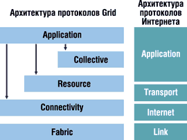
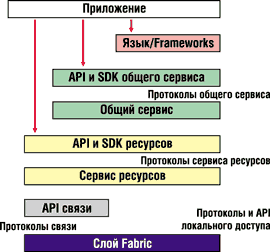
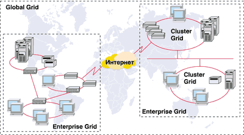

Олег Таковицкий
В науке, технике и бизнесе сейчас растет число задач, требующих сверхмощных вычислительных ресурсов и высокопроизводительных сетей. В ответ на это требование появляются все более мощные компьютеры и сложные программы, однако существует ряд задач, решение которых не под силу даже современным суперкомпьютерам. Как правило, проблемы здесь связаны с интенсивными вычислениями или обработкой громадных массивов данных. Постепенно приходит понимание того, что при довольно высокой цене предлагаемые архитектуры обладают ограниченной масштабируемостью, а их развитие отстает от развития элементной базы. В то же время для решения ряда задач, связанных, например, с прогнозированием природных явлений, обработкой данных о высокоэнергетических ядерных реакциях, эволюции галактик и т. п., все чаще требуются вычислительные мощности принципиально иного уровня.
Не секрет, что сегодня в разных организациях сосредоточено много вычислительных средств, которые далеко не всегда используются по назначению. Эти компьютеры могут находиться в разных местах, выполнять разные приложения, использовать разные средства хранения информации и системы доступа. С другой стороны, есть ряд интересных задач глобального масштаба, для решения которых требуются разнообразные компьютерные ресурсы и большие вычислительные мощности, причем выполнение этих задач можно распараллеливать. Во многом именно поэтому специалисты видят выход в использовании технологии Grid Computing, т. е. распределенной работы в сетях вычислительных ресурсов, иначе называемых вычислительными решетками.
При организации вычислений сегодня все чаще применяется разделение работ, данных и процессорных мощностей, а также иные схемы взаимодействия, предусматривающие использование распределенных ресурсов. При этом приходится обращать особое внимание на обеспечение связи между системами.
Классическая схема Grid Computing основана на использовании распределенных процессорных мощностей и распределенных систем хранения. Это позволяет эффективно задействовать незанятые вычислительные ресурсы, которые могут быть разбросаны по всему миру. Впрочем, сегодня системы, построенные на принципах Grid Computing, или просто Grid, создаются чаще всего внутри предприятий - в основном по соображениям безопасности.
Современные Интернет-технологии не обеспечивают интегрированного подхода к координированному использованию ресурсов на множестве узлов для выполнения вычислений. А вот технология Grid подразумевает слаженное взаимодействие множества ресурсов, гетерогенных по своей природе и расположенных в многочисленных, возможно, географически удаленных административных доменах. Пулы ресурсов могут объединять от единиц до нескольких тысяч элементов. При этом вероятно снижение производительности по мере увеличения пула. Следовательно, приложения, требующие объединения большого числа географически удаленных ресурсов, должны быть минимально чувствительными к времени задержки. Говоря о динамичности и адаптивности, отметим, что при объединении большого количества ресурсов отказы элементов - это не исключение, а скорее правило. Поэтому управление ресурсами или приложениями должно осуществляться динамически, чтобы извлечь максимум производительности из ресурсов и сервисов, доступных в каждый конкретный момент.
Действительная сила технологии Grid скрывается за самим словом "ресурсы", которые понимаются предельно широко. Сюда, пожалуй, входит все, что участвует в компьютерной обработке данных. Так, к ресурсам следует отнести коммуникации, системы хранения, хранилища данных, информационные системы, а также программные фонды. Например, если приложение анализа данных понимать как ресурс, то это означает возможность удаленного доступа к нему без установки на компьютер пользователя.
Надо сказать, что имеющиеся в мире Grid-системы гармонично дополняют ряд используемых сегодня вычислительных архитектур. Здесь можно упомянуть серверы с симметричной многопроцессорной архитектурой (общая память, сильные связи между процессорами, центральный коммутатор с низкой латентностью). На этих системах функционируют большие базы данных, сложные аналитические и вычислительные задачи, требующие согласованных операций над большими объемами данных. Кроме того, упомянем вычислительные кластеры, состоящие из нескольких узлов (чаще всего многопроцессорных), связанных внешним коммутатором. Такие системы решают задачи, в которых взаимодействие между отдельными вычислительными узлами организовано в виде передачи сообщений и которые могут быть разделены на относительно независимые этапы вычислений. Наконец, системы Grid Computing, в которых время взаимодействия между узлами измеряется миллисекундами и секундами, не предназначены для решения параллельных задач, а нацелены по большей части на выполнение пакетных заданий, - здесь каждая отдельная задача выполняется целиком на одном узле. Система управления вычислительной сетью занимается диспетчеризацией отдельных заданий, а не взаимосвязью между отдельными блоками одной задачи.
Концепция Grid Computing чрезвычайно привлекательна. Не случайно практически все гранды индустрии, в том числе Hewlett-Packard, IBM и Sun Microsystems, обратили свои взоры в сторону данной технологии. И все же первоначально идея Grid воплотилась в общественном проекте SETI@home.
Вообще говоря, одна из самых больших проблем в Grid Computing - это обеспечить различным группам пользователей (так называемым "виртуальным организациям") совместное использование географически удаленных ресурсов при совместной работе. При этом подразумевается отсутствие не только центрального расположения, но и централизированного контроля, а в общем случае - и атмосферы доверия в рабочих отношениях.
Поиск братьев по разумуИзвестно, что персональные компьютеры нередко используются владельцами крайне неэффективно, по большей части простаивая. Кстати, любопытно, что чем крупнее вычислительная система, тем, как правило, меньше ее простой. Этим и воспользовались энтузиасты проекта SETI@home. Вообще говоря, целью научной инициативы SETI (Search for Extraterrestrial Intelligence - поиск внеземного разума) было определить, существует ли во Вселенной разумная жизнь. Для поиска внеземного разума научные группы SETI используют множество методов - многие из них предполагают изучение миллиардов радиочастот, наводняющих Вселенную, с тем чтобы выяснить, не передает ли другая цивилизация какой-нибудь радиосигнал; некоторые группы в рамках SETI ищут сигналы в пульсирующем свете, исходящем от звезд. В процессе поиска внеземного разума задействованы сотни тысяч подключенных к Интернету компьютеров. Принять участие в этом проекте можно, запустив на своем ПК бесплатную программу, скачивающую и анализирующую данные, полученные от радиотелескопа; при этом постоянное подключение к Интернету совершенно необязательно. Каждый участник имеет хоть и небольшой, но захватывающий воображение шанс, что именно его компьютер обнаружит чуть слышный "шепот" цивилизации, находящейся далеко за пределами Земли. Проект SETI@home был запущен 17 мая 1999 года. Сейчас в нем участвуют свыше 2 млн человек из более чем двухсот стран. |
Grid-архитектура
Система Grid прежде всего должна устанавливать, контролировать и использовать отношения между ресурсами любых потенциальных участников совместного проекта. Центральной проблемой здесь считается обеспечение взаимодействия (интероперабельности) между различными платформами, языками и программными средами. В сетевой среде интероперабельность означает работу по общим протоколам. Именно протоколы регламентируют взаимодействие элементов распределенной системы, а также структуру передаваемой информации. Следовательно, Grid-архитектура - это прежде всего система протоколов, которые и должны определять базовый механизм взаимодействия. На основе стандартных протоколов можно строить стандартные сервисы, разрабатывать интерфейсы прикладного программирования API (Application Programming Interface) и инструментальные средства разработки SDK (Software Development Kits). Ядром многоуровневой модели (рис. 1) служат протоколы Resource и Connectivity, которые обеспечивают разделение индивидуальных ресурсов. Уровень Collective отвечает за координацию использования имеющихся ресурсов, а доступ к ним осуществляется с помощью протоколов Fabric.
|  | Рис. 1. Многоуровневая архитектура Grid.
|
Управление локальными ресурсами
Итак, уровень Fabric обеспечивает доступ к разделяемым ресурсам, востребованный протоколами более высокого уровня. Спектр ресурсов весьма широк - это могут быть компьютеры, устройства массовой памяти, каталоги, сетевые ресурсы и т. п. При этом ресурс может быть логической сущностью (например, распределенной файловой системой) или физической (кластером или пулом компьютеров). Реализация такого ресурса может включать внутренние протоколы (например, Network File System или протокол управления кластером), однако подобные протоколы остаются вне Grid-архитектуры. Компоненты уровня Fabric реализуют локальные операции, специфические для каждого данного ресурса (логического или физического). Как видно из рис. 1, этот уровень по своим функциям аналогичен канальному уровню эталонной модели OSI и по сути представляет собой набор интерфейсов для управления локальными ресурсами.
Коммуникации и безопасность
Уровень Connectivity - это ядро коммуникаций, он содержит протоколы аутентификации, которые требуются для выполнения специфических для Grid сетевых транзакций. Коммуникационные протоколы отвечают за обмен данными с уровнем Fabric. В их функции входят транспорт, маршрутизация и присвоение имен. Что касается защищенности, то здесь речь идет о единой идентификации, авторизации и защищенной передаче сообщений. Инфраструктура поддержки включает централизованную выдачу сертификатов, управление сертификатами и ключами и т. д.
Совместное использование ресурсов
В иерархии уровней Resource располагается над уровнем Connectivity. С помощью коммуникационных и аутентификационных протоколов, входящих в Connectivity, он проводит согласование методов безопасности, инициализацию и мониторинг ресурсов и управление ими. Для доступа к локальным ресурсам и дальнейшего управления Resource вызывает соответствующие функции уровня Fabric. Заметим, что протоколы уровня Resource предназначены исключительно для работы с локальными ресурсами, они не учитывают глобальное состояние системы и не отслеживают атомарные операции, выполняемые объединенными ресурсами. Этим занимается уровень Collection, который мы рассмотрим ниже.
Уровень Resource включает два основных класса протоколов. Это информационные протоколы, предназначенные для получения информации о структуре и состоянии ресурса, его конфигурации, текущей загрузке и политиках (к примеру, стоимости), и протоколы управления, обеспечивающие согласованность доступа к разделяемому ресурсу и определяющие необходимые операции, которые ресурс должен выполнить (скажем, инициализация процесса или доступ к данным).
Координация ресурсов
Если уровень Resource отвечает за взаимодействие с единичным ресурсом, то следующий в иерархии уровень, Collective, содержит протоколы, интерфейсы и сервисы, такие, как API и SDK (рис. 2), не связанные с каким-либо специфическим ресурсом. Это своего рода глобальные спецификации, которые отвечают за взаимодействие всех элементов пула ресурсов, что и отражено в самом названии Collective. В качестве примера глобальных функций и сервисов, реализуемых протоколами этого уровня, можно назвать службу директорий, распределение ресурсов, планирование и брокерские услуги, службы мониторинга, диагностики, репликации данных, коллективной авторизации.
|  | Рис. 2. Протоколы, сервис и API.
|
Уровень приложений
Application - высший уровень Grid-архитектуры. Он включает пользовательские приложения, которые исполняются в среде объединенных ресурсов. В процессе исполнения приложения вызывают службы нижележащих протоколов. На каждом из уровней имеются вполне определенные протоколы для взаимодействия с необходимыми службами - управлением ресурсами, доступом к данным, обнаружением ресурса и т. п. Данные структуры могут сами определять протоколы, службы и иметь собственные интерфейсы прикладного программирования.
Grid-службы
Технологии и инфраструктуры Grid Computing поддерживают совместное и скоординированное использование разнородных ресурсов в динамических, распределенных "виртуальных организациях" с различными правилами работы. Это позволяет создавать из географически рассредоточенных компонентов виртуальные вычислительные системы, способные совместно поддерживать требуемый уровень обслуживания. Свободно распространяемый инструментарий Globus Toolkit стал фактическим стандартом конструирования Grid-систем. На его основе созданы самые разные проекты, от систем обеспечения работы научных групп, которым требуется удаленный доступ к специализированным экспериментальным лабораториям, до систем распределенной аналитической обработки больших объемов информации.
Инструментарий Globus Toolkit включает:
- построенный на основе HTTP протокол резервирования вычислительных ресурсов GRAM (Globus Toolkit Resource Allocation Management);
- расширенную версию протокола для передачи файлов GridFTP;
- службу аутентификации и безопасности GSI (Grid Security Infrastructure);
- средства распределенного доступа к информации на основе протокола LDAP;
- средства удаленного доступа к данным через последовательный и параллельный интерфейс GASS (Globus Access to Secondary Storage);
- средства резервирования ресурсов GARA (Globus Reservation and Allocation).
Эволюция технологии Grid Computing привела к возникновению архитектуры Open Grid Services Architecture (OGSA). Основанная на ней Grid-система предоставляет обширный набор служб, которые "виртуальные организации" могут объединять различными способами. Концепции и технологии архитектуры OGSA были разработаны специалистами в области Grid и Web-сервисов. OGSA определяет единообразную семантику предоставления сервисов, стандартные механизмы для создания, именования и обнаружения экземпляров Grid-сервисов, обеспечивает независимость от местонахождения и связывание различных протоколов, поддерживает интеграцию с базовыми механизмами нижележащих платформ. Работы в области Grid Computing направлены сегодня на существенное расширение состава сервисов. Главная цель работ в этом направлении - возможность управлять информационной системой не как совокупностью компьютеров и дисков, а как набором служб, каждая из которых использует определенный объем ресурсов. Grid Computing - это возможность виртуализации вычислительных мощностей информационной системы.
Если стандарты Web-сервисов фиксируют форму интерфейсов служб, то OGSA задает стандарты семантики их взаимодействия, наборы обязательных интерфейсов. При этом определяется понятие Grid-сервиса, или Grid-службы. К числу стандартных относятся интерфейсы, связанные с обнаружением или динамическим созданием служб, управлением, уведомлением. К этому перечню со временем должны добавиться интерфейсы, связанные с авторизацией и управлением параллельным выполнением.
Подготовка технических спецификаций OGSA ведется в рамках организации Global Grid Forum (http://www.gridforum.org), разрабатывающей стандарты для Grid-сообщества; эталонная реализация технологии свободно распространяется через сайт Globus Project (http://www.globus.org).
Стандарт платформы GridИнструментарий с открытым кодом Globus Toolkit, разработанный совместно Калифорнийским университетом и Аргоннской национальной лабораторией, стал фактическим стандартом платформы Grid-сетей, получившим поддержку ведущих компаний США и Японии. Компании Hewlett-Packard, Cray, SGI, Sun Microsystems, Veridian, Fujitsu, Hitachi, NEC, IBM и Microsoft создают оптимизированные варианты Globus Toolkit для своих платформ. Компания Platform Computing планирует совместно с разработчиками инструментария создать его коммерческую версию. Работа над Globus Toolkit шла в течение шести лет, ее результатом стало появление набора протоколов, служб и приложений, обладающих открытой архитектурой и реализующих основную концепцию Grid как надежной масштабируемой среды координированного совместного использования ресурсов в динамичных многоячеечных "виртуальных организациях".
|
OGSA поддерживает создание, обслуживание и применение наборов сервисов для "виртуальных организаций", предлагая общее представление для вычислительных ресурсов и памяти, сетей, программ, баз данных и т. п. Все эти ресурсы трактуются как сетевые службы, предлагающие свои возможности посредством обмена сообщениями.
Ориентация на службы обеспечивает стандартные механизмы определения интерфейсов, независимость от местонахождения, адаптацию к локальным службам ОС и единообразную семантику. Такой подход также упрощает виртуализацию за счет объединения разнородных реализаций под общим интерфейсом.
Виртуализация поддерживает согласованный доступ к ресурсам на множестве гетерогенных платформ, позволяет определять отображение множества логических экземпляров ресурсов на один и тот же физический и помогает управлению ресурсами в "виртуальной организации", компонуя ресурсы более низкого уровня. Благодаря виртуализации появляется возможность объединять базовые сервисы и формировать более сложные службы. Виртуализация Grid-служб позволяет легко отображать общую семантику поведения сервисов на оригинальные механизмы платформы.
Возможность виртуализовать и комбинировать службы зависит не только от определения стандартных интерфейсов; необходимы также стандартные функции взаимодействия служб, например, единые механизмы обнаружения свойств служб. С этой точки зрения OGSA определяет Grid-службу как Web-сервис, предоставляющий множество специфицированных интерфейсов и поддерживающий специфицированные соглашения.
OGSA определяет стандартное поведение и соответствующие интерфейсы. Приложениям необходим механизм обнаружения доступных служб, определения их характеристик и конфигурирования запросов к этим службам. Требуется соответствующее средство и для динамического создания новых экземпляров службы и управления ими. OGSA устанавливает стандартный интерфейс Factory и стандартную семантику службы. Сервисы OGSA могут создаваться и уничтожаться динамически. Их можно удалять явно; они также могут быть удалены или стать недоступными из-за возникновения системной ошибки, например, в случае сбоя в операционной системе. Сервисы, входящие в набор динамических распределенных служб, должны иметь возможность асинхронно уведомлять друг друга о серьезных изменениях в своем состоянии. OGSA определяет общие абстракции и интерфейсы служб для подписки на такие уведомления и для их доставки.
В производственных средах, возможно, потребуется выполнять мониторинг больших наборов экземпляров Grid-служб и управлять ими. Соответствующие операции определяет интерфейс управляемости.
Архитектура Open Grid Services Architecture позволяет не только интегрировать ресурсы в распределенных гетерогенных динамических "виртуальных организациях" внутри одного предприятия, но и поддерживать совместное использование внешних ресурсов и коммуникации с поставщиками услуг.
Вклад лидеров отрасли
Корпорация IBM (http://www.ibm.com) по праву считается одним из самых активных участников продвижения технологии Grid Computing. Именно она инициировала первые Grid-разработки. IBM входит в проект Globus Project, нацеленный на создание ПО управления Grid-сетями с открытым исходным кодом. Специалисты Globus и IBM представили спецификации версии 3.0 программного инструментария Grid-систем, которая отличается от предыдущих версий главным образом наличием архитектуры Open Grid Services. IBM участвовала и в создании документа The Physiology of the Grid, в котором описывается OGSA. Этот документ по сути представляет собой план унификации Web-сервисов и Grid-систем на базе языка Web Services Description Language и других технологий.
В начале 2003 года IBM предложила несколько Grid-систем, облегчающих предприятиям ряда отраслей реализацию идеи суперкомпьютеров, составленных из большого числа не очень мощных машин, подсоединенных к сети. Эти системы включают компьютеры IBM и ПО компаний, специализирующихся на Grid-технологиях; они ориентированы на предприятия из сферы финансовых услуг, автомобильной и аэрокосмической промышленности, а также на научные организации, органы государственного управления и т. п. В процессе разработки этих систем IBM сотрудничала с пятью компаниями - Platform Computing, DataSynapse, Avaki, Entropia и UnitedDevices. Созданная в результате система Information Access Grid, предназначенная для сферы государственного управления, позволяет эффективно объединять разрозненные базы данных и упрощает извлечение информации благодаря унифицированному интерфейсу. Заказчикам из автомобильной и аэрокосмической отраслей IBM предлагает две Grid-системы: одна из них позволяет инженерам объединять компьютеры, занятые вычислениями, с помощью другой конструкторы из разных организаций могут совместно работать над одним и тем же проектом. Исследователи в области биотехнологий могут приобрести систему Analytics Acceleration Grid Computing для ускорения вычислений, относящихся к генетике или поиску новых лекарств, и Information Accessibility Grid - для обмена данными, в том числе недоступными стандартными способами. Финансовым учреждениям IBM предлагает систему Analytics Acceleration для ускорения торговых операций. Система IT Optimization Grid поможет заказчикам объединить компьютеры пользователей и системы хранения данных в распределенные вычислительные сети.
Сравнительно недавно появились отраслевые решения для нефтяной и электронной промышленности, высшего образования и агрохимии. Новые предложения Grid будут включать архитектуру OGSA. Подразделение IBM Global Services обеспечивает поддержку всех элементов внедрения Grid на оборудовании и ПО как самой IBM, так и других производителей. Поскольку ни одна компания не может в одиночку полноценно провести внедрение Grid-вычислений в коммерческом секторе, IBM представила инициативу по построению экосистемы Grid Computing, охватывающей производителей ПО и бизнес-партнеров, которые помогут разрабатывать коммерческие решения Grid. К инициативе присоединились около четырех десятков компаний, строящих фундамент для разработки экосистемы IBM Grid. Недавно к ним примкнула и Cisco Systems (http://www.cisco.com), которая совместно с IBM будет разрабатывать расширенные Grid-сервисы для сетей хранения данных SAN.
Разумеется, IBM не единственная компания, активно продвигающая идею Grid-вычислений. Деятельность компании Hewlett-Packard (http://www.hp.com) в области Grid Computing - это не только участие в инициативах по стандартизации ПО Grid, но и поддержка соответствующих программных технологий на аппаратных платформах НР (высокопроизводительных серверах, кластерах и системах хранения), а также альянсы с производителями коммерческих продуктов для реализации идей Grid Computing, участие в научных проектах и т. д.
Кроме того, HP предлагает собственную концепцию технологии Grid Computing - UDC (Utility Data Center). Она подразумевает коммерческое использование Grid Computing как технологии, которая обеспечивает минимальную нагрузку на средства передачи данных, решает проблемы защиты, распараллеливания баз данных и т. д.
Нewlett-Рackard обеспечивает поддержку Globus Toolkit на своих платформах под управлением операционных систем HP-UX, Linux и Tru64 Unix. Кроме того, специалисты HP находят перспективной интеграцию технологий Grid и Web-сервисов в соответствии с открытой архитектурой OGSA. Корпорация участвует в разработке OGSA и будет поддерживать эту архитектуру на своих системах. Она также предлагает широкий спектр услуг консалтинга для анализа возможностей, проектирования и развертывания Grid-решений на различных компьютерных платформах.
Технология управления распределенными ресурсами - важная составляющая и в стратегии N1 корпорации Sun Microsystems (http://www.sun.com), направленной прежде всего на обеспечение управляемости информационной инфраструктуры в условиях возрастающей нагрузки и увеличения числа компонентов сети. На сегодня в Sun Microsystems накоплен значительный опыт динамического управления вычислительными ресурсами внутри компьютера. В свою очередь применение технологий Grid позволяет строить систему управления географически распределенными вычислительными ресурсами. Тем не менее в Sun рассматривают технологии Grid Computing как дополнение к существующему ряду продуктов корпорации - этот ряд включает мощные SMP-серверы с масштабируемой операционной системой Solaris, средства для построения вычислительных кластеров HPC Cluster Tools и пакет управления вычислительными ресурсами Solaris Resource Manager. Кстати, Sun эксплуатирует собственную Grid-сеть, объединяющую более 6000 процессоров и 210 Тбайт данных. Каждый день эта система обсчитывает десятки тысяч задач электронного проектирования, при этом средняя загрузка процессоров составляет около 98%.
Sun Microsystems различает три основные категории Grid-сетей (рис. 3):
- относительно простая вычислительная сеть, предоставляющая ресурсы пользователям одной рабочей группы, одного департамента, одного проекта (Cluster Grid);
- вычислительная сеть корпоративного уровня, охватывающая несколько групп, работающих над различными проектами (Enterprise Grid);
- сеть, в которой участвуют несколько независимых организаций, предоставляющих друг другу свои ресурсы. Эти организации установили определенные правила обмена ресурсами, определенные протоколы взаимодействия (Global Grid).
|  |
| Рис. 3. Категории Grid-сетей.
|
Основные программные продукты Sun Microsystems для Grid Computing были анонсированы еще в сентябре 2000 года, после приобретения компании Gridware, которая к тому времени уже в течение пяти лет занималась разработками в этой области. Продукт Sun Grid Engine предназначен в первую очередь для сетей среднего размера, охватывающих отдел или небольшое предприятие. Данный продукт распространяется бесплатно, его можно загрузить с Web-сайта корпорации. Если же у предприятия возникает необходимость связать несколько таких сетей воедино и управлять политиками использования корпоративной сети Grid Computing, то необходимо расширить такое решение, приобретя коммерческий продукт Sun Grid Engine Enterprise Edition.
Сейчас в мире несколько тысяч систем используют ПО Sun Microsystems. В числе их владельцев - академические и учебные организации, например, суперкомпьютерный центр в Сан-Диего, суперкомпьютерный центр штата Огайо, Университет Эдинбурга, а также крупные коммерческие пользователи.